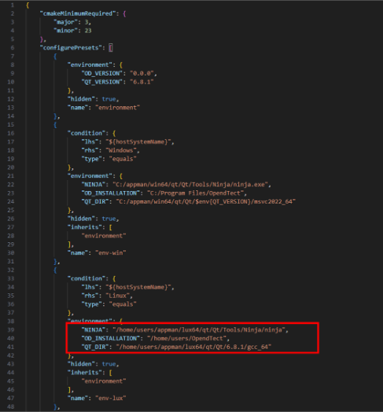
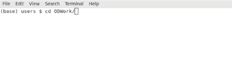
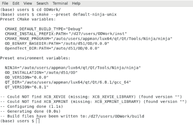

After creating the folder, open CMakeUserPresets.json in the directory you just created (e.g., /home/users/ODWork/CMakeUserPresets.json) using a text editor.
On Line 39, update the value to point to your Ninja directory (e.g., /home/users/appman/lux64/qt/Qt/Tools/Ninja/ninja).
On Line 40, update the value to your OpendTect installation directory (e.g., /home/users/OpendTect).
On Line 41, update the value to your Qt installation directory (e.g., /home/users/appman/lux64/qt/Qt/6.8.1/gcc_64).
After ensuring that all values are correct, save the file.

Next, open the Terminal. Point to the directory you just created previously (e.g., /home/users/ODWork)

Then, run the following command:
cmake --preset default-ninja-unix
Press Enter, and CMake will automatically start the configuration and generation process.
